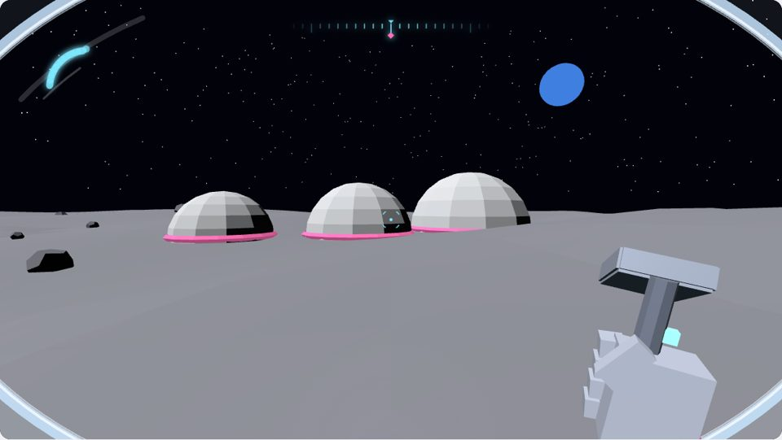
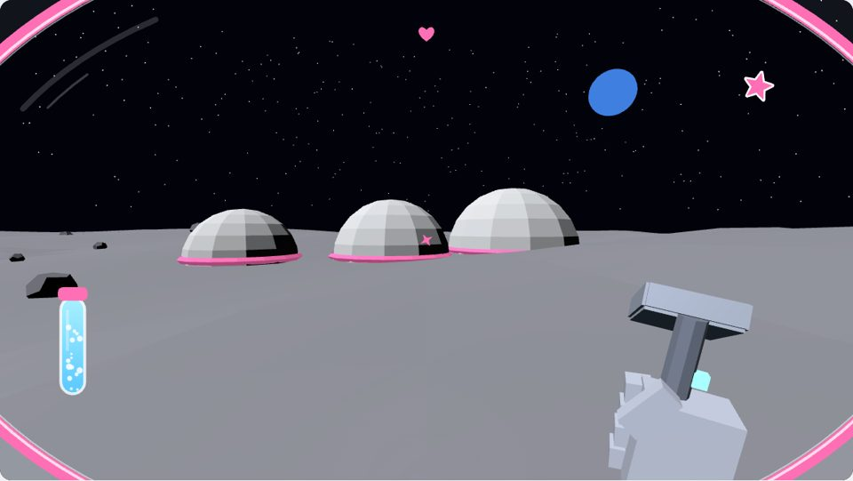
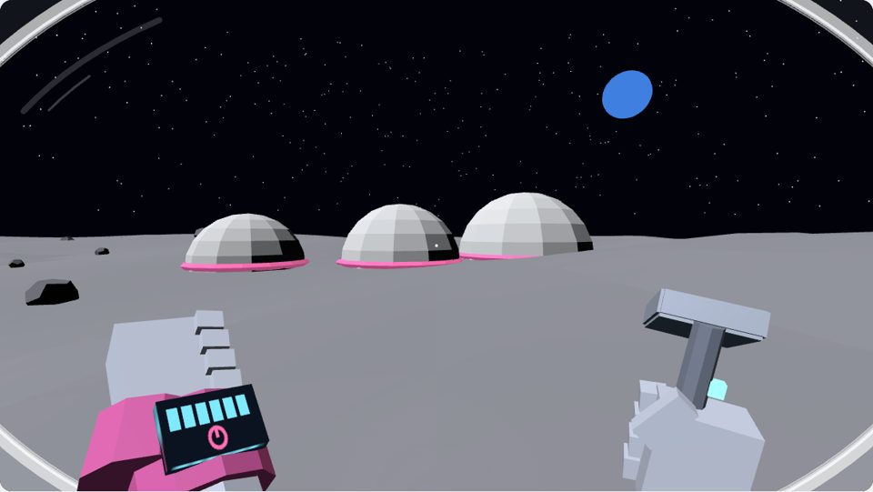

When you zoom all the way down into the world, you now put on that place's suit and hold its tool. On the Moon you're inside an astronaut bubble with your oxygen in it. On the Ranch you wear a sun hat and carry a watering can. Three ways to draw it are below, ready to play: the one Evan would like, the one Abbie would like, and a third.
Drag to look. W A S D or arrows to walk; on a phone, drag up to walk. Tap or press E to use the tool. V changes the HUD. Walk on the Moon long enough and your air runs low: the base tops you up with a chime. Nobody ever runs out.
We took both readings, because they fit together. Metadata: every place says what you wear and carry (the table below), so a new world gets its suit by naming one, not by new code. The meta layer: in our HUD canon, meta is what you feel in your own body. Helmet glass, your breath fogging it when you hurry, the fizz of fresh air: the suit lives there, and as little as possible goes in the overlay. A Metroid Prime style visor is one of the three proposals.
The one Evan would likeA. The Prime visor

Glass you look through, with readouts living on the inside of the frame like holograms. A ten-cell air arc hugs the top left, a thin heading tape runs along the brow with a pink diamond for home, and four brackets around the dot open while you walk. Everything tucks to a whisper after a few seconds of no change and comes back when something moves. Rich, cool, AAA. The glass changes with the place: bubble on the Moon, dust visor on Mars, hat brim on the Ranch.
Feel: "I'm wearing a real suit and it's watching out for me"
Character knows: the visor's own lights
Mode: meta (the glass) + a small overlay (arc, tape)
For: player
Adapts: air low = amber cells, breath fog, a chime
Style reference only: Metroid Prime's visor, Dead Space's suit lights.
The one Abbie would likeB. Bubble buddy

A pink fishbowl. Her air is a glass vial of bubbles on the left: you can see it going down, and it fizzes full again when the base tops her up. A little heart on the top edge leans toward home. A pink star sticker is stuck on her helmet, because it's hers. The aim dot is a twinkling star. No numbers, no words.
Feel: "My bubble is full of air and I know the way home"
Character knows: she can see the bubbles in her tank
Mode: meta (the bubble), diegetic (the vial), one heart
For: player (Abbie, 7)
Adapts: fewer bubbles, breath fog, fizz on refill
Style reference only: Astroneer's oxygen you can see, Animal Crossing's stickers.
The third, for good measureC. The glove

Nothing on screen but a dot. Raise your left hand and the cuff shows six air lights and a needle that points home. The tool's own lamp shows its charge. The purest version of our rule "how would the character know?": she looks at her wrist.
Feel: "I'm really there"
Character knows: she reads her own wrist
Mode: diegetic (cuff and tool lamps)
For: player
Adapts: lights go amber, the cuff blinks, a chime
Style reference only: Dead Space's spine, Astroneer's backpack, Firewatch's hands.
Obviously first person
The sandbox's buttons and panels step aside the moment you step down, the glass slides down over your eyes, a soft seal sound plays, and your hands rise into view. Zoom out or press Escape and it all comes back.
Two layers that never mix
The glass and the hands draw on their own canvases above the world. Characters, directors, the Oracle's shots and the voice controller's look never see them, and the suit never writes to the simulation.
Never masks the world
No haze, no fade, no dark edges. The bubble rim is clear glass with a light edge; breath fog only blooms at the bottom and fades. Measured cover on a 1280 by 800 screen: 2 to 3% for the Moon glass in all three proposals, 6% for the Ranch hat and Mars visor, 7% for the City goggles (the most), all under our 8% budget, with zero words.
Kind, PG, nobody fails
Air runs low as you walk, and before it ever runs out the base tops you up with a two-note chime and a fizz of bubbles. No red alarms, no buzzer.